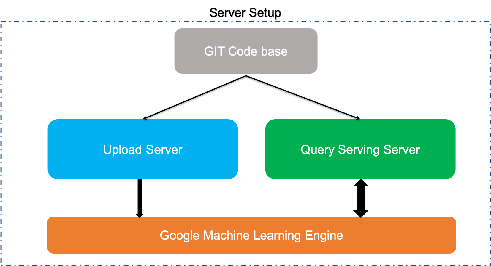

Installation
Prerequisites
JatanaAI has been tested with Python 2.7 and 3.6. It is recommended to use it with Python 2.7, we will soon port the complete code on Python3.7 but its not going to impact any interfaces.
There are primarily 2 server which we need to setup:
- Upload server
- Query Serving Server

Note
Setting up JatanaAI for lots of clients can require high configuration of systems for inferencing.
Setting up Upload Server
Follow the instruction to setup the upload server.
Config server
sudo apt-get update
sudo apt-get install apt-transport-https ca-certificates curl gnupg-agent software-properties-common
Get the code
Clone the repository
git clone https://github.com/jatana-ai/jatana-nlp-microservices
Unless you've already got numpy & scipy installed, we highly recommend that you install and use Anaconda.
cd jatana-nlp-microservices
# create a virtual environment
virtualenv -p python3.6 JatanaAI
# activate the virtual environment
source jatana-nlp-microservices/bin/activate
# install dependencies
pip install -r requirements.txt
# install gcfuse
sudo apt-get install gcsfuse
# setup storage using gcfuse
mkdir data
gcsfuse jatana-nlp-storage data/
# run service
./jatana-ms-upload/ignite.sh
Test JatanaAI
GET locahost:8080/api/ms/v3.0/ignition
and returns response
{
"Engine Status" : "Microservice for UPLOAD is alive and kicking"
}
Setting up Serving Server
Config server
sudo apt-get update
sudo apt-get install apt-transport-https ca-certificates curl gnupg-agent software-properties-common
sudo apt-get install gcsfuse
sudo apt install docker.io
Setup GCFuse
export GCSFUSE_REPO=gcsfuse-`lsb_release -c -s`
echo "deb http://packages.cloud.google.com/apt $GCSFUSE_REPO main" | sudo tee /etc/apt/sources.list.d/gcsfuse.list
curl https://packages.cloud.google.com/apt/doc/apt-key.gpg | sudo apt-key add -
sudo apt-get install gcsfuse
Get the code
Clone the repository
git clone https://github.com/jatana-ai/jatana-nlp-microservices
cd /jatana-nlp-microservices/jatana-ms-train-v2/trainer
mkdir data
gcsfuse --implicit-dirs jatana-nlp-storage data/
Get Tensorflow serving docker image
docker pull tensorflow/serving
Run the serving
docker run -p 8500:8500 -p 8501:8501 \
--mount type=bind,source=/home/projects/jatana-nlp-microservices/jatana-ms-train-v2/trainer/data/export/,target=/models/ \
-t tensorflow/serving \
--model_config_file=/models/models.config
Testing
If everything went fine then the service will be up and running and we can test that by hitting multiple enpoints.
Model status API
If you want to check the status of the model if can be done using
Request
GET http://host:port/v1/models/${MODEL_NAME}[/versions/${MODEL_VERSION}]
/versions/${MODEL_VERSION} is optional. If omitted status for all versions is returned in the response.
Response
{
"model_version_status": [
{
"version": "3",
"state": "AVAILABLE",
"status": {
"error_code": "OK",
"error_message": ""
}
}
]
}
Model Metadata API
It returns the metadata of a model in the ModelServer.
Request
GET http://host:port/v1/models/${MODEL_NAME}[/versions/${MODEL_VERSION}]/metadata
/versions/${MODEL_VERSION} is optional. If omitted status for all versions is returned in the response.
Example:
GET http://localhost:8501/v1/models/jatanademo_macro/metadata
Response
{
"model_spec": {
"name": "jatanademo_macro",
"signature_name": "",
"version": "3"
},
"metadata": {
"signature_def": {
"signature_def": {
"predict": {
"inputs": {
"text": {
"dtype": "DT_INT32",
"tensor_shape": {
"dim": [
{
"size": "-1",
"name": ""
},
{
"size": "100",
"name": ""
}
],
"unknown_rank": false
},
"name": "model_1_input:0"
}
},
"outputs": {
"scores": {
"dtype": "DT_FLOAT",
"tensor_shape": {
"dim": [
{
"size": "-1",
"name": ""
},
{
"size": "5",
"name": ""
}
],
"unknown_rank": false
},
"name": "dense_1/Softmax:0"
}
},
"method_name": "tensorflow/serving/predict"
}
}
}
}
}